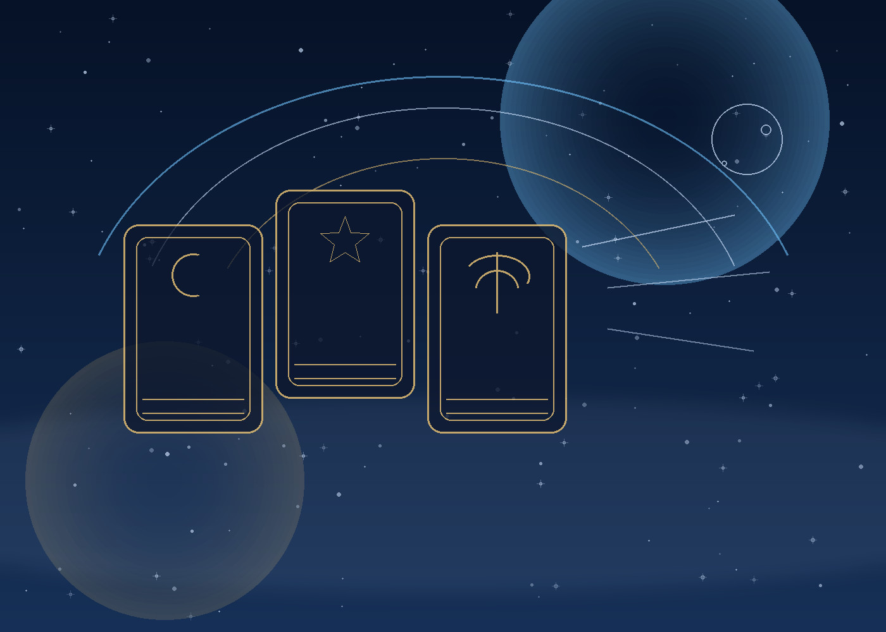

Tarot for no contact
A grounded guide to silence, mixed signals, boundaries, and deciding whether reaching out would actually help.
Read the no-contact guidePrivate guidance for real questions
Get a short, private AI tarot reading for a real love, career, or no-contact question. Start free, then choose a deeper one-time reading or membership only if you want more structure. Love readings stay with relationships; career readings stay with work decisions and the next step you can control.
Tarot offers symbolic reflection, not a fixed outcome. Optional Bazi-informed timing and I Ching context add another lens for pattern and change; they do not replace professional advice or another person’s choices.

Free gives a quick symbolic read. One-time paid tiers add structure and more specific guidance. Membership tiers are the only ones that require login and ongoing account access.
Popular starting points
Choose a focused guide for the situation you are actually facing. Each page explains what a reading can help you explore, what it cannot prove, and what a practical next step might look like.
A grounded guide to silence, mixed signals, boundaries, and deciding whether reaching out would actually help.
Read the no-contact guideExplore timing, reciprocity, tone, and what to check before sending a message after distance.
Read the texting guideSeparate nostalgia, contact, accountability, and real repair before you build your life around a return.
Read the return guideLook at emotional residue, silence, and whether missing someone is becoming meaningful action.
Read the missing-you guideLearn how to ask a direct question without losing the context that makes a relationship reading useful.
Read the yes-or-no guideUse a structured reading to think through role fit, pressure, timing, and your next practical move.
Read the career guideConsider opportunity, hidden costs, team pressure, and alignment before saying yes to an offer.
Read the job-choice guideWork through burnout, stability, leverage, and transition timing without treating a reading as a command.
Read the career-exit guideA practical spread for confidence, blind spots, preparation, and the parts of an interview you can control.
Read the interview guideUse symbolism to surface trade-offs, pressure, and the next step when a choice feels emotionally crowded.
Read the decision guideUnderstand what AI tarot can do well, where it is limited, and why the question matters more than certainty.
Read the accuracy guideA cultural and reflective guide to the Fire Horse year, the 12 signs, and how to read tradition without fatalism.
Read the zodiac guideFree experience
This is the lightest result tier. It helps the user feel seen, but it does not replace the deeper paid formats.
Free and one-time paid readings can be used without an account. Membership plans are different: they require login because they include returning access and saved usage.
Input template
Name is optional. Birth date and time are optional for general Tarot, but useful for Bazi-informed timing context. Love Focus only returns relationship guidance. Career Focus only returns work guidance.
Single-purchase readings
After payment, the user can enter a question and receive the matching result depth immediately.
Membership access
These tiers already use account-based access because they are designed for repeat use, saved member permissions, and return visits across a longer guidance cycle.
Required only for recurring plans. Membership buttons will open this flow automatically.
Create an account first, then the paid subscription can be attached to it.
Guides and method
These evergreen guides explain the traditions, the limits of AI readings, and how to use symbolism as a reflection tool rather than a substitute for judgment.
A practical introduction to symbolism, question quality, spreads, and reflective decision support.
Read the Tarot guideUse clear questions, small spreads, journaling, and stopping rules without outsourcing your judgment.
Practise self-readingSee the difference between structured reflection, prediction claims, and professional advice.
Read the accuracy guideA calm framework for silence, boundaries, mixed signals, and the choice to reach out or wait.
Read the love guideLearn how to frame work decisions around role fit, pressure, timing, and action you can control.
Read the career guideUse a reading to name trade-offs and pressure without outsourcing responsibility for the decision.
Read the decision guideUnderstand what Bazi-informed timing means on this site and what it does not claim to calculate.
Read the Bazi guideLearn the Fire Horse context, sign-year mapping, and why different traditions may explain the zodiac differently.
Read the zodiac guideMove from private-mind speculation toward consent, contact quality, repair, and a self-directed boundary.
Use the waiting period for evidence, professional follow-up, continued applications, and offer review.
Translate stay, leave, change, and offer questions into evidence-based next experiments.
See what information is optional, how one-time readings differ from memberships, and where to find the policy.
Read the privacy guidePrivacy
Name is optional, birth details are optional, and only the membership path needs saved account access.
No real name required for one-time readings.
Only collect details needed for the selected format.
Do not turn vulnerable questions into ad-tracking data.
Only recurring paid plans create account-linked history.
FAQ
These answers are written to match how users actually search: free tarot reading, love tarot, career clarity, privacy-first readings, and Eastern timing systems like Bazi.
The site combines structured symbolic reading with focused prompts, then adapts the answer to the selected tier. Free results stay short. Paid results become deeper, more actionable, and more tightly aligned to the user's question.
Yes. Users can start with a free tarot reading before deciding whether they want a one-time paid reading or a recurring membership for deeper ongoing guidance.
Bazi adds a timing and life-cycle perspective from ancient Chinese wisdom traditions. On this site, it is used as a reflective timing layer rather than a formal professional chart calculation. It helps users think about pattern, season, and readiness rather than emotion alone.
Yes. Love Focus is designed to stay with relationships, communication, trust, boundaries, reciprocity, and next-step timing instead of drifting into unrelated life topics.
Yes. Career Focus is designed for role fit, work pressure, execution, opportunity timing, leverage, and practical decision support without mixing in romance content.
No. Name is optional. Birth details are optional. Only recurring membership plans need account-based access, and the site is designed around a privacy-first, minimal-collection approach.
Trust and editorial standards
We publish clear method notes instead of asking you to trust a mysterious promise. Our guides are reviewed for useful questions, privacy-aware wording, safety boundaries, and a next step that does not depend on controlling another person.
Meet the Love AI Tarot Editorial Team and see the standards used for clarity, method, context, and practical usefulness.
Read the standardsLearn how card selection and AI interpretation work, why a reading is not mind-reading, and how to judge an output.
How AI Tarot worksName and birth details are optional for general readings. One-time reading paths do not require an account.
Read the Privacy PolicyTarot can support reflection, but it cannot replace qualified help for medical, legal, financial, employment, or safety decisions.
Read the service termsExplore by question
Choose a focused path for love, no contact, career, beginner Tarot, timing, or privacy. Each path leads to a clear hub before the longer guides.
Explore communication, silence, reciprocity, closure, and the next step you can control.
Compare role fit, pressure, offers, interviews, timing, and practical evidence before acting.
Understand the deck, spreads, question design, and how to turn a symbol into a useful reflection.
Read cultural background and timing language with regional care and clear limits around prediction.
Make trade-offs, assumptions, evidence, and a review date visible before you decide.
Separate contact, repair, consent, and behaviour before reading a return as a promise.
Use a private-mind boundary, projection audit, and observable signal framework.
Connect Tarot reflection to interview evidence, pipeline stages, and preparation.
Compare method transparency, privacy, boundaries, and useful next steps.
Record questions, spreads, facts, interpretations, bias checks, and review dates without turning reflection into certainty.
See how the site is edited, how AI Tarot works, what information is optional, and where the boundary is.